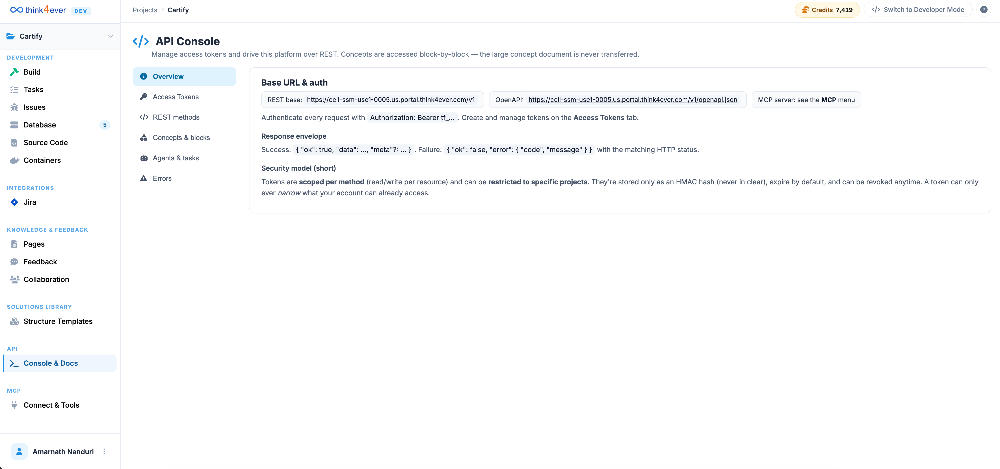
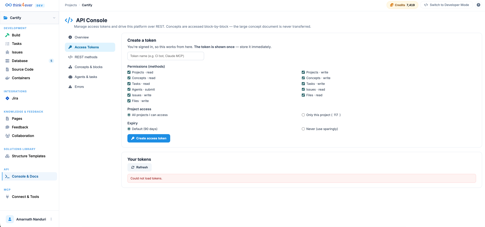
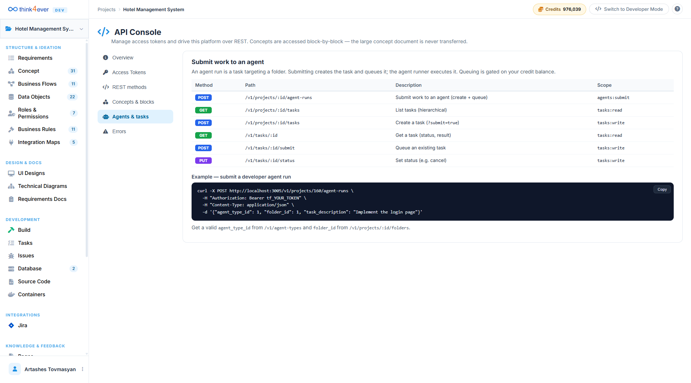
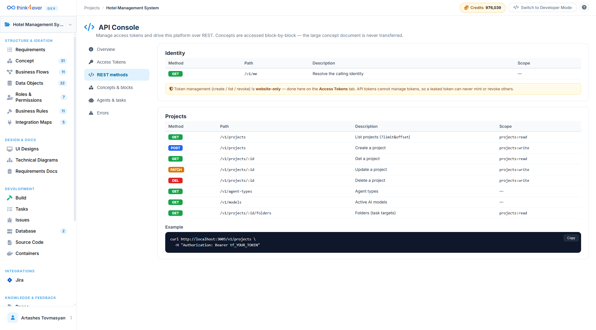
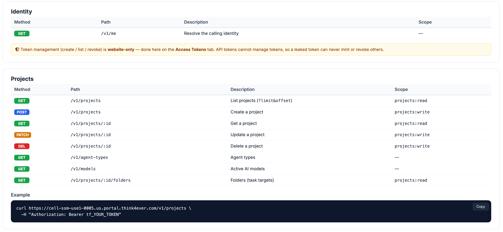
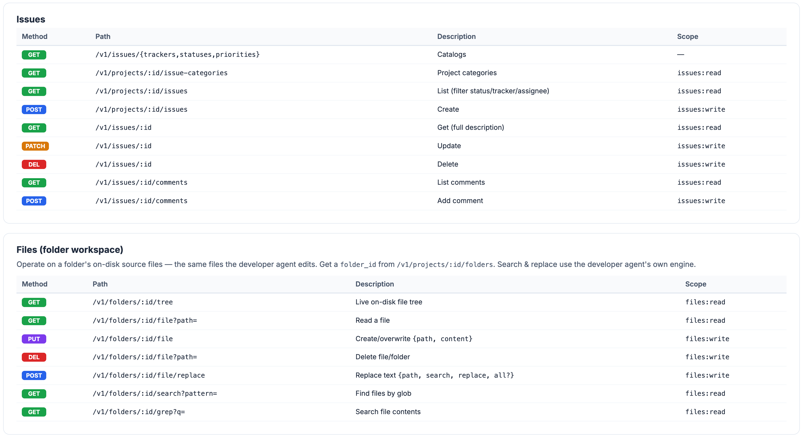
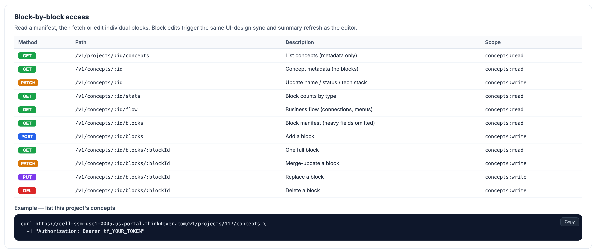
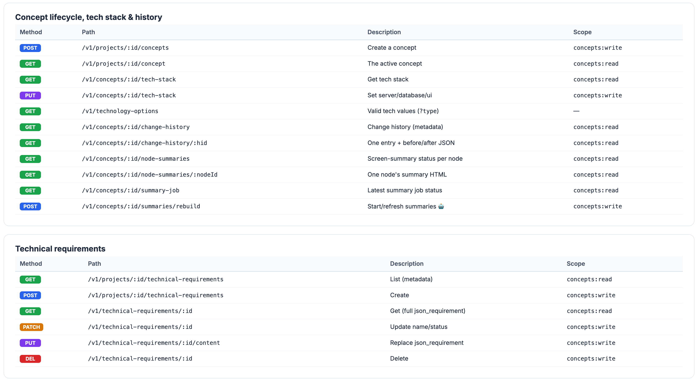
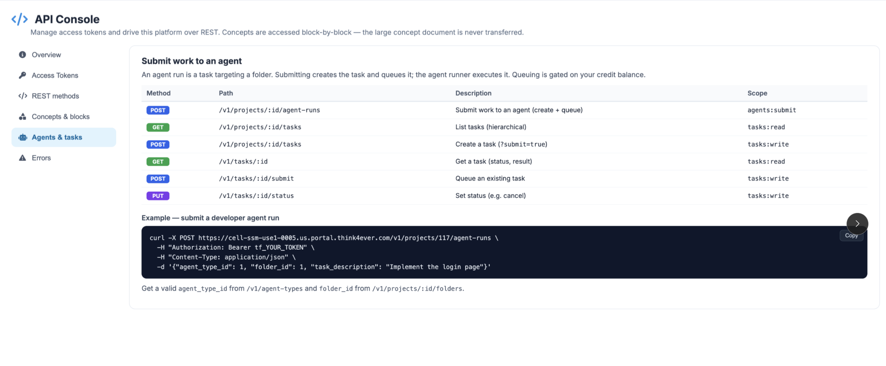
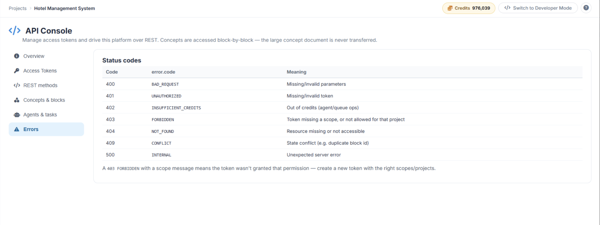

Think API
Overview
The Think API Console provides a professional, standard REST interface to programmatically manage access tokens and seamlessly drive your project configurations. While the visual web workspace serves as your centralized hub for organizing application architectures and business logic, the Think API exposes these assets programmatically on a granular level. Concepts are accessed block-by-block—ensuring that dense, large concept design documents are never transferred over the wire in bulk, maximizing throughput and reducing structural latency.

Global Base Settings & Request Formats
Integrating your external workflows, script triggers, or third-party monitoring services with a project requires using standard base configurations and response definitions.
Global Base Settings & Request Formats
Integrating your external workflows, script triggers, or third-party monitoring services with a project requires using standard base configurations and response definitions.
Global Endpoint Metadata
- REST Base Route URL: https://cell-ssm-use1-0005.us.portal.think4ever.com/v1
- OpenAPI Schema Specification: https://cell-ssm-use1-0005.us.portal.think4ever.com/v1/openapi.json
Access Tokens
Tokens are managed directly under the Access Tokens manager tab within the console interface. For granular operational security, tokens are scoped per individual method (enforcing explicit read/write privileges per resource block) and can be tightly restricted to specific target projects. The platform records these values strictly as cryptographically secure HMAC hashes, processes default expiration cycles automatically, and supports immediate revocation at any point.

Standardized Response Envelope
The Think API wraps execution responses inside a predictable JSON layout format, facilitating clean runtime exception handling and uniform metadata parsing:
// Successful Handshake Layout
"ok": true,
"data": { ... },
"meta": { ... }
// Operational Exception Layout
"ok": false,
"error": {
"code": "ERROR_CODE",
"message": "Detailed description outlining the underlying
validation or execution exception."
}
Platform Core Navigation Pathways
The API splits its programmatic routes across distinct structural tabs based on your specific implementation requirements:
- Overview: High-level platform settings, base endpoint definitions, and security model summaries.
- Access Tokens:Interface for provisioning, monitoring, and revoking secure cryptographic bearer keys.
- REST Methods:Central operational routes governing base environmental states, administrative attributes, and project profiles.
- Concepts & Blocks: Granular endpoints designed to read, create, update, or remove explicit structural elements (e.g., individual screen fields, roles, or business rule blocks).
- Agents & Tasks:Operational pipeline layers used to manage, schedule, and verify autonomous code generation runs.
Agent Task Orchestration & Pipeline Automation
Through the Agents & Tasks panel, deployment configurations can programmatically delegate development goals to the system's background generation engine. Spawning an agent run instantiates an isolated task execution loop directed at a specific codebase subdirectory folder.
Task Orchestration Endpoints Matrix
| Method | Route Path | Operational Action | Token Scope |
|---|---|---|---|
| POST | /v1/projects/:id/agent-runs | Registers an engineering assignment targeting a specific folder, instantly creating the task entity and queuing it for execution. | agents:submit |
| GET | /v1/projects/:id/tasks | Pulls down a hierarchical, structural tracking list of all tasks assigned to the current project. | tasks:read |
| POST | /v1/projects/:id/tasks | Explicitly maps a standalone task or manual development milestone directly onto the tracking board (?submit=true). | tasks:write |
| GET | /v1/tasks/:id | Requests a comprehensive status card along with the final compilation results for a single task identifier. | tasks:read |
| POST | /v1/tasks/:id/submit | Forces an immediate queue execution pass or pushes a retry cycle for a previously configured task definition. | tasks:write |
Developer Implementation Blueprint
Submitting a Developer Agent Run
To trigger a remote background compilation assignment from a shell environment, local script pipeline, or continuous deployment server, dispatch an authenticated POST request to the project's agent run endpoint:
Bash
curl -X POST http://localhost:3005/v1/projects/160/agent-runs \
-H "Authorization: Bearer tf_YOUR_TOKEN" \
-H "Content-Type: application/json" \
-d '{
"agent_type_id": 1,
"folder_id": 1,
"task_description": "Implement the login page"
}'
Infrastructure Credit Guardrails & Prerequisites
Background task compilation loops and automated agent execution threads consume direct server capacity. Programmatic placement into the active execution queue is strictly gated based on your account's remaining credit balance. To ensure smooth pipeline execution, verify that your scripts fetch valid resource definitions (agent_type_id via /v1/agent-types and target folder_id via /v1/projects/:id/folders) before attempting to pass payload instructions to the run queue.
Architectural Interaction Pathways
The Think API securely exposes system architecture through a series of discrete programmatic interfaces:

REST Methods
Standardized HTTP endpoints designed to retrieve project schemas, execute mutations, and update structural variables programmatically.



Concepts & Blocks
Direct granular endpoints that allow external applications to parse, modify, or extend explicit design modules (such as specific screens, user roles, or validation rules) rather than processing the entire system layout in bulk.


Agents & Tasks
Operational endpoints that manage the pipeline's execution layer, allowing external environments to command, assign, or monitor automated agent development scripts.

Executing Agent Tasks Programmatically
The API allows teams to submit localized or pipeline-driven instructions directly to Think4ever's background multi-agent compiler. When an external application passes a task definition, it queues an asynchronous execution cycle targeting a specific code repository subdirectory.
Authentication and Request Construction
All interactions with the platform's endpoints utilize standard token-based headers. Before sending payloads, developers must generate a unique bearer token (tf_YOUR_TOKEN) within the Access Tokens manager sub-menu.
Task Management Endpoints Matrix
| Method | Route Path | Operational Action | Token Scope |
|---|---|---|---|
| POST | /v1/projects/:id/agent-runs | Dispatches a new coding assignment to an internal developer agent targeting a specific folder workspace. | agents:submit |
| GET | /v1/projects/:id/tasks | Returns a hierarchical structural list of all active, pending, or completed tasks tied to the project instance. | tasks:read |
| POST | /v1/projects/:id/tasks | Explicitly maps a new development milestone or sub-task to the project tracker dashboard. | tasks:write |
| GET | /v1/tasks/:id | Requests a detailed status summary and resolution output for a singular designated task identifier. | tasks:read |
| POST | /v1/tasks/:id/submit | Forces an immediate queue execution cycle or redeployment pass for an existing task definition. | tasks:write |
| PUT | /v1/tasks/:id/status | Modifies the operational state parameters of an active task (e.g., manually canceling a run or resetting an assignment). | tasks:write |
Error and Status Code Handling
The Think API utilizes standardized HTTP status codes paired with clear semantic error strings to represent execution results. When an operation returns a non-200 status, inspect the JSON response envelope's error.code to identify the block lifecycle exception.

Think API Troubleshooting Guide
This troubleshooting guide provides clear, actionable steps to diagnose and resolve errors encountered while programmatically interacting with the Think API Console.
Direct Resolution Steps for Core Status Codes
When an external pipeline script, curl command, or integration tool receives an error, check the HTTP status code and error.code string in the JSON response envelope to pinpoint the solution.
401 UNAUTHORIZED / Missing or Invalid Token
- The Problem: The API cannot validate your credentials. The token is either missing from the headers, malformed, or has expired.
-
How to Fix: * Open the Access Tokens tab in the console and verify if
your token is still active. If it has expired or been
revoked, generate a new one.
- Check your script or curl syntax. Ensure the token is passed exactly as an HTTP header with the proper capitalization and spacing: Authorization: Bearer tf_YOUR_TOKEN.
403 FORBIDDEN / Token Missing a Scope
- The Problem: Your token is cryptographically valid, but it does not have permission to execute this specific action or access this specific project. For example, you sent a POST request to create a task using a token restricted only to read actions.
-
How to Fix: * Review the Scope column in your console references to see
what permission your endpoint requires (e.g., agents:submit
or tasks:write).
- Navigate to the Access Tokens tab and create a new token. Explicitly check the required method scopes (read/write per resource) and make sure the token is authorized to access the specific project ID you are targetting.
402 INSUFFICIENT_CREDITS / Out of Credits
- The Problem: Your authentication is completely correct, but the system blocked your background task or agent execution run because the project's credit balance is empty.
-
How to Fix: * Check the top-right corner of the Think4ever web platform
to view your active Credits balance.
- If the balance is depleted, navigate to your account billing management settings to top up your infrastructure allocation before re-triggering programmatic queue operations.
400 BAD_REQUEST / Missing or Invalid Parameters
- The Problem: The platform server received your payload, but the JSON data structure failed validation requirements.
-
How to Fix: * Check for syntax errors such as missing commas, unmatched
brackets, or trailing spaces in your payload JSON.
- Look beneath your example scripts in the console to ensure you are referencing existing, live platform parameters. If you are submitting an agent run, you must pass valid, numerical IDs for agent_type_id and folder_id. Query /v1/agent-types and /v1/projects/:id/folders first to cache real environment values.
404 NOT_FOUND / Resource Missing or Not Accessible
- The Problem: The server cannot locate the specific URL path, project ID, block component, or task ID specified in your request.
-
How to Fix: * Double-check your URL parameter variables. For example,
ensure that :id in your path matches your actual project ID
(e.g., changing /v1/projects/:id/tasks to
/v1/projects/160/tasks).
- If you are querying a specific block inside Concepts & blocks, verify through the web interface that the component hasn't been deleted or renamed by another teammate.
409 CONFLICT / State Conflict
- The Problem: The payload values you sent conflict with the current state of your project architecture. This frequently happens if your script attempts to inject a block with a duplicate ID that already exists in the blueprint.
-
How to Fix: * Run a GET request on your concept blocks layout to verify
existing assets before issuing a write command.
- Ensure that your external automated changes strictly respect the structural rules mapped out in your Think4ever workspace to prevent architecture fragmentation.
Quick Diagnostics Checklist
If your automated pipeline scripts or local tool integrations fail unexpectedly, quickly run down this three-step checklist:
- Test the Base URL Connection:Ensure your scripts are hitting the exact REST base path assigned to your workspace instance cluster: https://cell-ssm-use1-0005.us.portal.think4ever.com/v1.
- Validate the Raw OpenAPI Specification:If your tool setup or code-generation engine acts confused about payload properties, point your integration engine to the absolute OpenAPI directory layout link (/v1/openapi.json) to force-sync all available properties.
- Verify Response Formats: Ensure your script's exception-catching logic checks for the platform's standard outer JSON wrapper. A failed execution will always return "ok": false and contain an explicit error key tracking back to the core status directory table.